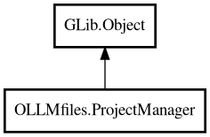

ProjectManager
Object Hierarchy:

Description:
public class ProjectManager : Object
Central coordinator for all file system operations.
ProjectManager is the entry point for all file system operations. It manages file cache, tracks active project and active file, provides
buffer and git providers, handles database persistence, and emits signals for state changes.
The file_cache provides O(1) lookup by path. Projects are folders with is_project = true (no separate Project class). Database operations
are optional (can work without database).
Content:
Properties:
Static methods:
Creation methods:
Methods:
- public void activate_file (File? file)
Activate a file (deactivates previous active file).
- public async void activate_project (Folder? project)
Activate a project (deactivates previous active project). Note:
Projects are Folders with is_project = true.
- public async FileUpdateStatus check_active_file_changed ()
Check if the active file has been modified on disk and differs from
the buffer.
- public File? get_file_from_active_project (string file_path)
Check if a file path is in the active project.
- public async void load_projects_from_db ()
Load projects from database.
- public void notify_file_changed (File file)
Notify that a file's state has changed (save to database).
- public void notify_project_changed (Folder project)
Notify that a project's state has changed (save to database). Note:
Projects are Folders with is_project = true.
- public async void reload_file_from_disk ()
Reloads active file from disk into buffer, discarding unsaved changes.
- public async void restore_active_state ()
Restore active project and file from in-memory data structures. Note:
Projects are Folders with is_project = true. This will set this.active_project and this.active_file, deactivate previous items, update
the database, and emit signals.
- public async void write_buffer_to_disk ()
Writes current buffer contents of active file to disk.
Signals:
Inherited Members:
All known members inherited from class GLib.Object
- @get
- @new
- @ref
- @set
- add_toggle_ref
- add_weak_pointer
- bind_property
- connect
- constructed
- disconnect
- dispose
- dup_data
- dup_qdata
- force_floating
- freeze_notify
- get_class
- get_data
- get_property
- get_qdata
- get_type
- getv
- interface_find_property
- interface_install_property
- interface_list_properties
- is_floating
- new_valist
- new_with_properties
- newv
- notify
- notify_property
- ref_count
- ref_sink
- remove_toggle_ref
- remove_weak_pointer
- replace_data
- replace_qdata
- set_data
- set_data_full
- set_property
- set_qdata
- set_qdata_full
- set_valist
- setv
- steal_data
- steal_qdata
- thaw_notify
- unref
- watch_closure
- weak_ref
- weak_unref